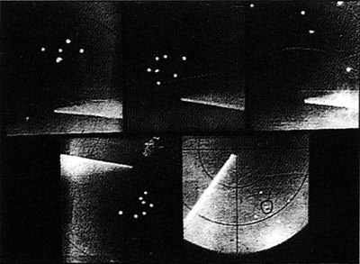

L'ufologie est l'étude des ovnis (de "UFO" : Unidentified Flying Object ou objet volant non identifié). Que
cela signifie-t-il ? Pas grand chose, tant que l'on ne saura pas ce que sont les ovnis. Autant parler alors d'"étude
de l'inconnu", de l'inexpliqué, ce qui, à tout prendre, est le but de la science en général. Cependant, au contraire
de celle-ci, l'ufologie souffre de nombreux handicaps : elle s'intéresse à un phénomène non reproductible à volonté,
se base en grande partie sur des témoignages, n'a pas de méthodologie très
développée, reste peu organisée, et enfin étudie un sujet controversé,
souvent raillé, parfois sulfureux, On ne sait au juste ce qu'est un "ufologue", si ce n'est une personne ayant acquis
une certaine expérience dans l'étude des ovnis (il n'y a pas de diplôme en la matière). Un ufologue peut être un
scientifique passionné par ce hobby les week-ends, comme un jeune facilement influençable et friand de théories
complotistes, ou un véritable enquêteur rigoureux. Une faune hétéroclite donc, mais pourtant captivée un mystère
commun.
Plonger dans l'ufologie
Des responsables de l'US Air Force présentant le projet Blue Book d'étude des ovnis dans les années 1950s
Entrer dans un domaine aussi en marge que l'ufologie se fait souvent par un choc. Le choc du décalage entre la
réalité d'un phénomène et la manière dont la société le gère. Comme toute chose, l'ufologie est un iceberg.
Découvrir l'ufologie, c'est passer d'une partie émergée où une poignée d'hurluberlus racontent avoir vu une
"soucoupe volante", à un microcosme immergé où des milliers de spécialistes travaillent
sur des dizaines de milliers d'observations, remontant aussi loin dans l'histoire que
l'on puisse imaginer. Un monde où des observations inexpliquées sont faites tous les jours, dans le monde entier,
confirmées par radar, laissant des traces, où les armées s'inquiètent légitimement et officiellement du phénomène, où des pays
mettent en place des organismes dédiés à leur étude, font des rapports
officiels, où la majorité des témoins sont sincères, indépendants, pilotes ou agents de police et fuient toute
publicité. Ce monde-là est tout aussi réel, mais bien méconnu. La première chose que l'on découvre du phénomène,
c'est donc qu'il est bien réel, et pris au sérieux par nombre de gens tout aussi sérieux. Mais si considérer un
phénomène comme sérieux et réel est une chose, l'expliquer en est une autre.
En effet, la deuxième chose que l'on apprend, c'est que l'explication
extraterrestre, si elle largement représentée, n'est pas la seule proposée par les ufologues. On y avance aussi
des thèses spatio-temporelle (des terriens venant du futur typiquement), paranormales (reliant le phénomène des ovnis à
d'autres phénomènes paranormaux déjà signalés), ou simplement que le phénomène n'a rien d'extraordinaire, le
réduisant à des illusions, méprises et canulars. Reste une proportion de dubitatifs, reconnaissant comme
tous la réalité d'une énigme, mais qu'aucune thèse n'a encore convaincu.
Traces photographiées suite à l'observation d'un "décollage" à Soccorro (Nouveau Mexique) en 1964
Les ufologues, souvent consternés que ce qu'ils découvrent chaque jour n'éveille pas plus de réactions ni de prise
de conscience chez les autorités ou chez le grand public, trouvent dans cette effarement une force pour franchir la
barrière des convenances, des a prioris, et accepter l'inconfort d'un décalage avec les idées admises par
tous. Comment se fait-il qu'il y ait un tel décalage entre les données du phénomène et ce qu'en fait la société ?
Tous visent à réduire ce décalage en présentant leur interprétation au public, soit comme un phénomène insoupçonné,
soit comme un phénomène démystifié. Enfin, plus rarement, on pourra s'intéresser à l'ufologie par le besoin
irrépréssible d'expliquer une expérience personnelle, si l'on a soi-même été témoin d'un ovni. Beaucoup ne savent
pas si ce qu'ils ont vu était ne soucoupe volante extraterrestre ou autre chose. Cela reste, au moins, l'observation
d'un phénoméne aérien étrange, pour lequel on a trouvé aucune explication.
Le phénomène
8 ovnis détectés par le radar de l'Aéroport National de Washington (Juillet 1952)

Si ces courants se sont dégagés, et qu'aucune explication ne l'a pour l'instant emporté sur une autre, c'est
parce que le phénomène est complexe, et c'est là une troisième découverte. Si on ne peut nier son existence, on ne
peut non plus nier son apparente incohérence : formes diverses,
apparences diverses d'occupants au comportement incompréhensible (ostentatoire mais élusif, locutions parfois
dénuées de sens), défi aux lois physiques connues. La plupart des ufologues considèrent cette image incohérente
comme révélatrice d'une incompréhension, peut-être due à un manque d'information — une partie des données
manquant pour comprendre le phénomène — ou au contraire à l'erreur de considérer l'ensemble des témoignages
comme relevant d'un seul et même phénomène. On est alors tenté, soit de glisser discrètement une partie des
données sous le tapis, soit à élaborer des théories "unifiées" sans réelles bornes, expliquant chaque jour un
éventail plus large de phénomènes, à l'aide de concepts forcément de plus en plus abstraits.
Les débats
Symposium annuel du MUFON, une des plus grandes associations ufologiques
Tout naturellement, des débats ont lieu, constamment, entre spécialistes. On y parle de cas anciens ou tous
récents, on échange des références, on défend des théories mais, trop souvent malheureusement, entre camps
radicaux. D'un bord ou d'un autre, la simple évocation du doute vous catalogue rapidement chez l'ennemi. Il ne
s'agit plus alors d'étude, mais de croyance. Parlez de l'intérêt d'une analyse socio-psy à un extraterrestrophile,
et vous devenez un horrible sceptique. Parlez ensuite de l'intelligence apparente ce certains objets inexpliqués à
un sceptique extrême, et vous devenez un illuminé. C'est le collage d'étiquette, c'est-à-dire en somme l'antithèse
d'un débat : décréter ce que pense une personne, et la cataloguer dans le camp adverse, avec qui il n'est pas
digne de discuter. On ne discute trop souvent qu'entre gens d'accord entre eux, pour faire avancer la cause,
conspuer les ennemis, se donner des armes supplémentaires, dans l'espoir de bientôt remporter la "victoire".
Cependant on ne peut reprocher aux croyants de ne discuter qu'entre eux. D'abord parce qu'il ne s'agit pas d'un
comportement surprenant dans le contexte où ils se trouvent, mais aussi parce que cela évite autant de débats
stériles dont on ne pourrait de toute façon rien espérer. Lorsqu'on ne veut pas accepter la réalité de quelque chose, rien, absolument rien ne convainc,
disait Pierre Guérin, un ufologue célèbre, et astronome par ailleurs. Après tout donc,
cela évite à chacun de perdre du temps, aussi bien les croyants que les chercheurs, pour qui les étiquettes
deviennent autant de panneaux "Ne pas déranger".
Dans tous les cas, croyants ou chercheurs, il arrive que les egos s'en mèlent. Si c'est peu surprenant pour les
premiers, c'est regrettable pour les derniers. De personnes ou de groupements, ces fiertés égoïstes nuisent
parfois à la recherche en général, éludant des dialogues — un chercheur réputé ne parle pas avec un jeune
blanc bec
— ou entretenant un secret — il faut sortir un scoop avant telle association, il ne faut pas que telle
information filtre — plus ou moins bien motivé : l'intérêt de la recherche reste l'information ou l'action
menée en elle-même, qui que soit son initiateur. Heureusement la vérité finit toujours pas être connue, et
nombreux sont les chercheurs privilégiant la connaissance avant la reconnaissance.
Les actions
Un témoin policier, un agent fédéral, un major de l'Air Force, une enquêtrice amatrice et un sergent de police
militaire, tous sur le lieu de l'observation (1964)
On trouve divers types d'actions ufologiques, auxquels correspondent souvent des profils d'ufologues. A la base
de tout sont les enquêteurs, somme toute assez rares, mais indispensables. Ce sont eux qui, lorsqu'une rumeur
circule, vont la vérifier, généralement à leurs propres frais. Il peut s'agir d'un travail de fond sur un cas
réputé ou d'aller interroger les témoins d'une observation récente. De leur méthodologie dépend la qualité des
données et donc des analyses. On trouve malheureusement autant de méthodologies que d'enquêteurs, et une collecte
homogène des données reste à inventer. En effet, de la même manière que l'on peut pondérer la valeur d'un
témoignage en fonction du profil du témoin (sa profession et ses compétences d'observation afférantes, sa
réputation), le profil et la méthodologie de l'enquêteur lui-même ne sont pas neutres, et il reste hasardeux de
les considérer homogènes, dans une étude statistique typiquement.
Une explication de photographie célèbre d'ovnis
Exploitant le travail des enquêteurs, sont les chroniqueurs, les archivistes, répertoriant, synthétisant et
publiant les données. Tels des journalistes n'allant pas sur le terrain, ils peuvent avoir la fâcheuse tendance à
se recopier de proche en proche. Rarement enquêteurs eux-mêmes, ils ne vérifient que trop rarement leurs sources,
et pourront se muer en vecteur de rumeurs infondées, souvent involontairement, mais parfois pendant très
longtemps. Ce travers s'est d'autant plus développé avec l'émergence d'Internet, vecteur de communication facile
et accessible à tous. Comme pour d'autres domaines, Internet à cependant apporté une accélération considérable à
la recherche ufologique, au travers d'une grande démocratisation (voire de tribunes) et d'une capacité accrue de
communication (dialogues, données multi-media). Cependant, encore une fois, les actions rendues possibles par ces
nouveaux moyens sont limitées. Elle se réduisent à la transposition de l'écrit et de l'image tels qu'ils existent
aujourd'hui en informatique, et la sémantique comme l'organisation de ces données reste spécifique à chaque
chercheur, de sorte que l'échange et le traitement de l'ensemble des données disponibles reste problématique.
Enfin sont les théoriciens. Sur les bases des données publiées, ils élaborent des classifications, des études statistiques, et parfois des modèles d'explication du phénomène ou de
certains de ses aspects. Un scientifique pourra proposer un modèle de propulsion expliquant certaines
caractéristiques observées, un autre ufologue pourra avancer une théorie expliquant une sous-catégorie du
phénomène, etc. Leur travail est chaque jour remis en cause par de nouveaux faits, et cent fois sur le métier
remettront leur ouvrage les adeptes de la méthode scientifique.
L'ufologie est-elle une croyance ?
L'ufologie est en marge de la société, plus encore que des disciplines comme l'astrologie, la voyance, le feng shui ou la religion en
général. A la différence de ces dernières, elle n'a pas de vérité établie. Elle est, par définition, une activité de
recherche. C'est ici la première confusion que l'on fait à son égard : le public s'imagine que les ufologues sont
des gens qui "croient aux ovnis", c'est-à-dire — dans l'esprit du public — croient que des vaisseaux
spatiaux extraterrestres visitent la Terre. Pour un ufologue, "ovni" n'a pas la même définition : le terme se résume
à son sens strict, c'est-à-dire un phénomène aérien qui n'a pu être identifié. Certains rechignent même à utiliser
le mot "objet" qui est déjà pour eux un parti pris, et se cantonnent à parler de "phénomène". Pour un ufologue, un
"véritable ovni" est un ovni qui n'a pas reçu d'explication, après enquête.
Il n'y a donc, en ufologie, ni d'ovni systématique, ni d'explication systématique. En fait, la plupart des
ufologues n'ont pas d'explication. Les autres sont de véritables "croyants" — en une explication
extraterrestre, en une explication paranormale, en une explication rationaliste, etc. — et passent plus de
temps à défendre une thèse qu'à chercher une explication — c'est moins frustrant, mais ça ne mène pas au même
but.
L'ufologie n'est donc pas une croyance. Elle n'a pas de vérité à présenter, elle n'a pas de dogme, ni d'impact dans
la vie de tous les jours. Mais comme toute activité de recherche, elle a aussi ses propres "marges" de croyants.
L'ufologie est-elle une science ?
Publication du rapport de l'étude sur les ovnis commandée par l'US Air Force
S'il est un point commun aux ufologues, c'est bien la volonté de reconnaissance. Ils entendent par là une
acceptation publique de la réalité du mystère qu'ils étudient et de l'intérêt de son étude, avec le soutien que cela
suppose de la part des autorités. Les ufologues sont convaincus du bien fondé de leur travail, et ressentent comme
une injustice qu'il ne soit pas reconnu. Pour atteindre cette reconnaissance, ils se sont fixés un modèle : la
science. Celle-ci représente la rigueur, la respectabilité, et le soutien que recherche l'ufologie. Pour atteindre
ce but, certains ufologues se sont mis à appliquer à l'étude des ovnis la méthologie scientifique qu'ils ont apprise
durant leur formation, ou sur le tas. D'autres, avec moins de bonheur, voudraient faire de l'ufologie une science
en elle-même, comme si l'étude des pierres tombant du ciel avait donné place à la météoritologie, ou que la
découverte d'une civilisation extraterrestre puisse un jour être une discipline en soi. L'ufologie a ses experts,
elle a même ses scientifiques, elle peut se pratiquer scientifiquement, mais de fait, n'est pas une science, et n'a
pas vocation à l'être.
Le aspects les plus voyants et les plus troubles de l'ufologie — ceux que voit le grand public —
rendent donc problématiques ses relations avec la science. L'ufologie fait la cour à la science mais persiste une
sorte de "je t'aime moi non plus" où l'une veut séduire, convaincre et embrasser, et l'autre est méfiante, voire
repoussée par l'image que donne la première. Comme en amour, on fait des efforts, on veut être pris au sérieux (on
change de nom, passant de "soucoupe volante" à "ovni", puis à "phénomène aérien non identifié", on sort ses plus
belles formules et ses plus belles théories) et cela paye parfois : quelques scientifiques daignent alors oublier sa
façade peu engageante pour s'intéresser à sa beauté intérieure. Mais la vie n'est pas un conte de fée, et pour la
majorité c'est l'image qui reste importante avant tout, une image pour l'instant trop peu rassurante et crédible
pour un néophyte, fut-il scientifique.
L'ufologie est-elle rationnelle ?
Tentative de corrélation entre observations d'ovnis et activité sismique dans le bassin de Uinta (1967)
S'il est un acte rationnel, c'est bien de chercher à expliquer ce qui ne l'est pas. Combien de néophytes —
parmi le grand public ou les scientifiques — vont qualifier l'étude des ovnis d'"irrationnelle", alors que,
s'il est une attitude irrationnelle, c'est bien d'émettre un avis sur un problème que l'on a jamais étudié. C'est
ce que l'on appelle un a priori, un avis avant étude.
Une autre tendance rationnelle, plus rare, consiste à suivre la vérité là où on la trouve. Si certains
considèrent que changer d'avis est un comportement peu respectable, un "retournement de veste" qui ne serait que
le signe d'une instabilité ou d'un opportunisme honteux, d'autres y voient la preuve d'une honnêté flagrante. On
peut effectivement se demander ce que l'on a à gagner en changeant d'avis, que cela soit en science ou en
ufologie. De la part de vos anciens sympathisants, que des colibets. De la part d'autres et surtout de soi-même,
du respect. Changer d'avis en ufologie comme en science, est bien au contraire l'attitude la plus respectable que
l'on puisse considérer. C'est admettre s'être trompé, et accepter d'en payer le prix pour coller à la réalité de
la vérité. En ufologie quelques figures ont changé d'avis. Des partisans de l'extraterrestre ont évolué vers du
paranormal plus large, d'autres vers le socio-psychologique, d'autres encore ont été troublés au point d'envisager
sérieusement la visite de civilisations non humaines. Quel que soit leur choix, ils n'oublient pas leur expérience
passée, il n'oublient pas ce en quoi ils ont cru. Au contraire, c'est justement cette expérience qui les a conduit
vers ce nouveau stade de réflexion, et qui n'est, pourquoi pas, peut-être pas le dernier. Ainsi se construit
l'intelligible, ainsi se construisent les explications, par essais et erreurs successifs, à l'image de la
science.
L'ufologue et le grand public
Du jour où l'on commence à s'intéresser réellement au mystère posé par les ovnis, on entre dans un autre monde :
un monde si vaste, empreint de ramifications, et si complexe que l'on s'apperçoit bien vite qu'il ne saura être
accessible au public à qui l'on voudrait en faire part. On réalise que cela ne sera possible qu'au prix de
simplifications et de compromis que l'on se refuse à accepter. Un scientifique accepterait-il simplications,
termes approximatifs ou amalgames ? Rare sont les bons "vulgarisateurs" en ufologie, parce que le coeur du mystère
réside dans l'accumulation des données, intransmissible en quelques phrases. Il y a là des trésors pour les
scientifiques de tout domaines, mais ils ne le savent pas — et pour l'instant, ne veulent pas le savoir.
C'est donc enfermé, aussitôt, que l'on penêtre dans le monde des ovnis. Certains s'autoriseront des sorties pour
recommuniquer avec le monde des "vivants", y gagnerons un équilibre, et d'autres y resterons reclus, préférant
partir dans les profondeurs d'une connaissance privilégiée. Dans les deux cas, une réelle communication avec
l'extérieur restera donc impossible. Est-ce grave ? D'autres domaines, comme les sciences officielles ne
connaissent-elles pas le même sort ? Si, et elles semblent bien s'en accommoder. Car, contrairement à l'ufologie,
le public croit en elles, et c'est ce qui fait toute la différence.
— Whoa... Vous avez vu çà ? — V-vu quoi ? — Moi non plus !
Ce public, et sa position face son domaine, l'ufologue le connaît par coeur. Il connaît sa typologie, ceux qui,
sans jamais avoir étudié la question, vont déclarer "y croire" ou "ne pas y croire", et poser leurs sempiternelles
questions : "Est-ce que vous y croyez ?", "Y-a-t-il des preuves ?" et autres "Est-ce que ça existe ?" Des
questions pourtant si simples, mais qui hantent les ufologues, car ils ne peuvent y apporter de réponses. Ils ne
croient pas, ils cherchent. Il y a des preuves, mais ce ne sont pas celles que vous attendez. Des choses existent,
mais on ne sait pas ce que c'est. Pour le public, rien que des réponses insatisfaisantes. Commencez une réponse
par "ça dépend" ou "je ne sais pas", et un néophyte perd son intérêt. Ce qu'il veut, ce sont des réponses, pas des
recherches en cours. Mieux vaut encore dire "Je vous dirais quand j'aurai trouvé."
Un autre problème dans le discours au grand public est de ne pas passer pour un fou. Il faut en effet se souvenir
que celui-ci considère toujours les ovnis comme des vaisseaux extraterrestres. Quand il vous demande "Est-ce que
les ovnis existent ?", c'est en fait "Est-ce que des vaisseaux extraterrestres visitent la Terre ?" qu'il vous
demande. L'ufologue, dans son propre langage, répond naturellement "oui" — la question lui semble même
saugrenue : bien sûr que des gens voient tous les jours des phénomènes aériens qu'ils n'expliquent pas, et qui
seront peut être expliqués plus tard — mais dès cet instant il est catalogué comme le plus endoctriné des
raéliens. Répondez "je ne sais pas" et vous verrez la stupeur dans l'oeil de votre interlocuteur : "Eh bien alors,
pourquoi vous y intéresser ?". Même lorsque le grand public comprend que vous cherchez, il pense que vous le
faites parce que vous croyez. Il pense que vous voulez révéler au monde une vérité. Il ne comprend pas que vous
êtes simplement en train de chercher des réponses à des faits qui vous dépassent, et qui le dépassent sûrement lui
aussi.
Le problème de la "preuve"
Si vous voulez irriter un ufologue, demandez-lui s'il a une preuve. Non pas parce qu'il n'en a pas, mais parce
que, quoi qu'il vous réponde, il sait que vous n'en resortirez pas satisfait. Soit vous la rejeterez, victime de
vos a prioris, soit vous resterez dubitatif, faute de pouvoir vérifier. Mais jamais — jamais — vous
n'irez vérifier par vous-même. Parce que vous n'êtes pas ufologue. Parce que vous avez une conviction simple, et
que vous ne voyez pas pourquoi en sortir. Pour trouver efforts et problèmes ? Non, vous "n'y croyez pas, et c'est
très bien comme çà. Une incrédulité a priori qui n'est en fait bien sûr qu'une croyance comme une autre,
un jugement de convenance. Un exemple en est le medium à tort emblématique de la preuve : la photographie. Tout le
monde connaît la fameuse phrase "j'y croirai quand j'en verrai".
"Une forme indéfinie ? Ca peut être n'importe quoi..."
Montrez une photo d'ovni flou à un croyant, une boule lumineuse par exemple. Pour un partisan de l'hypothèse
extraterrestre, il n'est pas étonnant que votre photo soit floue car les ovnis sont dotés d'un dispositif
permettant de ne pas apparaître nettement sur les photos (où le gouvernement exploite un tel dispositif pour que
l'on ne puisse rapporter de bonnes photos d'ovnis pour les complotistes). Pour un partisan de la socio-psychologie
ou le grand public, c'est probablement une étoile, une planète, la Lune, un phare ou au pire de la foudre en
boule, ajoutant "les photos d'ovnis sont toujours floues, comme par hasard. Montrez-moi donc une photo
nette".
"Une soucoupe nette ? Forcément faux !"
Montrez alors une photo d'ovni nette à un croyant. Une superbe soucoupe volante, sans aucune équivoque, en gros
plan. Un défenseur de l'hypothèse extraterrestre vous dira qu'il s'agit d'une preuve indubitable, voire que seul
un complot peut expliquer que l'on nie de tels éléments factuels. Le sceptique qui demandait cette photo nette
vous dira qu'elle est "trop belle pour être vraie", et qu'il ne peut s'agir que d'un canular. Par définition.
On voit bien ici que ce n'est pas la preuve qui est en cause, mais la croyance. Conformément à son principe, le
croyant évalue la véracité des faits en fonction de sa foi. Le président de l'ONU serre la main à un
extraterrestre ? Puisque les extraterrestres ne peuvent pas exister ou nous visiter, c'est soit un trucage, soit
une manipulation de l'opinion. Tous les scientifiques du monde entier s'entendent sur l'explication
socio-psychologique des ovnis ? Puisque nous sommes visités par des extraterrestres, ça ne peut être qu'un
complot. Les faits ne sont pour la croyance qu'un vecteur d'expression. Rien ne sert donc de remplir les critères
de preuve d'un croyant, car la foi offre toujours un rebond possible. C'est le contraire de chercher.
Maintenant que répondrait un non-croyant face à ces photos ? Qu'une photo n'est pas une preuve. Il l'analysera,
en tirera des conclusions quand à la possibilité d'un trucage ou les caractéristiques du phénomène photographié,
mais jamais il ne concluera sur un cas — et a fortiori sur l'ensemble du phénomène ovni — sur
le seule base de ce que le grand public considère intuitivement comme une "preuve". De la même manière, si les
témoignages, les échos radar, les traces au sol constituaient des preuves incontestables, l'ufologie aurait depuis
longtemps pignon sur rue. On est plutôt en droit de penser que la véritable preuve, s'il y en a une, se trouve
au-delà de tel ou tel élément matériel. Nous disions tout à l'heure qu'on ne pouvait faire transmettre le mystère
de l'ufologie en quelques mots, parce que son mystère résidait dans sa complexité, sa multitude, et l'accumulation
des données. C'est donc peut-être là qu'il faut chercher. Dans la globalité plutôt dans que les détails,
fussent-ils les plus concrets. Expliquer un cas, dans un sens ou dans l'autre, n'est pas expliquer le phénomène.
Envisager un phénomène nouveau
N'y a-t-il donc de salut en ufologie que par le non-choix ? Est-il déraisonnable et faire acte de croyance que
d'envisager que nous soyons visités par des extraterrestres ou que le phénomène soit finalement explicable ? Bien
sûr que non. Comme partout, si les marges sont dangereuses, c'est moins par les questions qu'elles posent que par
les réponses qu'elles apportent — quand elles en apportent. Le phénomène ovni relève-t-il réellement de
l'inconnu, ou n'est-il que la conséquence d'un ensemble de méprises et mécanismes psychologiques connus ? Est-il
superflu ou nécessaire pour la science d'envisager une thèse éloignée du conventionnel, et à quel prix ? Les
questions sont légitimes, mais les réponses apportées aujourd'hui sont-elles acceptables ?
Du point de vue la science, on sait que l'émergence de théories nouvelles (les météorites, le vol des plus lourd
que l'air) ont toujours eu la vie dure, même lorsqu'ils étaient facilement reproductibles. Le phénomène ovni a
quant à lui le désavantage de ne pas être reproductible, et de reposer en grande partie sur des témoignages.
au pire dogmatiques et au mieux prématurées. Certains cas d'ovni sont à l'évidence explicables par des mécanismes
socio-psychologiques, et d'autres cas résistent à l'évidence à toute explication par des phénomène connus. Aucune
croyance ne rend compte de l'ensemble.
L'ufologue n'est pas aux assises, et on ne lui demande pas de trancher, en temps et en heure, en livrant son
"intime conviction". Non, on lui demande chercher, sereinement et rigoureusement, et de livrer une explication
quand il l'aura trouvée, pas avant.
Les croyants
La 13ème "Convention Annuelle des Vaisseaux Spatiaux" à Giant Rock (Californie) réunit 5000 personnes
en Octobre 1966
Par définition, les croyants n'ont pas besoin de preuves. Leur foi ou intime conviction leur montre dans tout
fait une preuve supplémentaire. Il y a plusieurs familles de croyants. En tout premier lieu le grand public, qui a
son opinion a priori sur les ovnis, pourtant sans jamais les avoir étudiés. Il y aussi certains ufologues
: pour prendre deux extrêmes, on peut citer ceux défendant "l'approche socio-psychologique" et ceux défendant
"l'hypothèse extraterrestre". Dans un cas comme dans l'autre, ce n'est pas l'objet de leur croyance qui est en
cause. Chacun peut raisonnablement s'accorder sur l'intérêt d'une étude socio-psychologique — s'en passer
reviendrait à considérer naïvement le témoin comment un rapporteur toujours objectif et fiable — comme sur
l'ouverture à une explication extraterrestre du phénomène. Les deux sont nécessaires, mais aucune n'est suffisant.
"que des ballons ?"
C'est donc ici la démarche qui est en cause. Les termes "approche" comme "hypothèse" en sont d'ailleurs très
révélateurs : chacun désigne, non pas une méthodologie permettant d'aboutir à un résultat, mais une thèse à
valider. Chacun commence par poser sa conclusion, puis examine les données qui, à coup sûr, doivent s'y accorder.
Les cas récalcitrants seront, pour une thèse comme pour l'autre, "oubliés" ou rélégués à d'étranges catégories
telles que, selon les familles : "canular possible", "trucage possible" — tout est possible en définitive,
sauf la contradiction — du pudique "manque d'informations" — lorsque seules des informations non
admissibles sont disponibles — ou au contraire de la "manipulation", du "canular visant à
décrédibiliser" propres aux théoriciens de la conspiration. On ne verra jamais un croyant en "l'hypothèse
extraterrestre" admettre que certains cas pourraient avoir une explication socio-psychologique, et je l'on ne
verra jamais un croyant en "l'approche socio-psychologique" admettre que certains cas pourraient avoir une
explication extraterrestre. C'est là le symptôme même de la croyance.
Les croyants confondent donc moyen — une hypothèse, un axe d'étude — et but, conclusion. En
choisissant de n'utiliser qu'un seul de ces outils à leur disposition — que l'hypothèse extraterrestre ou
que l'hypothèse psycho-sociologique — ils renoncent en fait à tout espoir de trouver une explication. Et
pour cause, ils n'en cherchent pas : ils l'ont déjà, et la défendent. Lorsque survient un cas qui ne répond pas à
leur dogme, il l'oublient, ou, lorsqu'il est trop voyant pour être mis de côté, échafaudent un écheveau si coûteux
de suppositions, conditions nécessaires ou de raisonnements fermés qui s'auto-entretiennent qu'ils en perdent
toute crédibilité. Les croyants s'enfoncent chaque jour un peu plus dans leur spirale, qui intéresse plus la
sociologie que les ufologues.
Pourquoi des croyants ?
Intuitivement, on sent bien qu'il n'y a qu'une seule vérité possible. Cela semble logique. Quand quelqu'un
raconte avoir vu un ovni, soit il s'agissait d'un véhicule extraterrestre, soit ce n'en était pas un. Il n'y a pas
de "juste milieu" en la matière. Certes, mais pour un second cas ? Et un troisième ? C'est compliqué. Quand les
choses deviennent trop compliquées, apparaît comme par magie la conviction. A un moment de son étude du phénomène,
tout ufologue est susceptible de devenir "convaincu" d'une théorie ou d'une autre. Dans ces moments-là, les cas
dérangeants disparaissent. En notre for intérieur on sait très bien qu'ils sont là, mais on les oublie, on les met
de côté, en se disant qu'il s'agit de bruit, d'erreur de témoignage et bref, qu'après tout, ce ne doit pas être un
témoignage probant, puisque la grande majorité du reste semble coller à la théorie qu'on s'est choisie. Une
théorie qui a au moins l'avantage de nous sortir d'entre deux eaux où, décidément, il est pas agréable nager trop
longtemps. Vient effectivement un moment où il n'est décidément plus supportable de ne pas savoir, ou du moins de
ne pas croire savoir. Eviter cette désagréable impression de stagner, d'avoir passé toutes ces années à étudier
sans avoir avancé. Alors on renonce, et l'on se décide, consciemment ou pas, soit à lâcher l'ufologie, soit à
défendre une thèse plus facile que le phénomène lui-même. Il est plus facile de voir du "tout
socio-psychologique", comme il est plus facile de voir du "tout extraterrestre". Mais le phénomène est toujours
là, lui, et n'est pas facile.